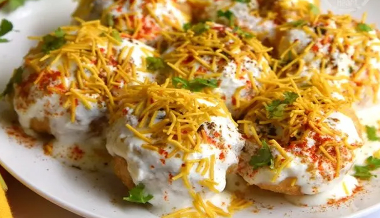

FUCHKA

Ingredients
For puri
- ½ cup Semolina aka suji
- 1 tablespoon all-purpose Flour aka Maida
- ¼ teaspoon salt
- ⅛ teaspoon or 1 small pinch of Baking soda
- 3 tablespoons Water
- Oil to deep fry the puris
For potato filling
- 2 large or 3 medium Potatoes, boiled
- 1 small Onion, finely chopped (optional)
- 2-3 green Chillies, finely chopped
- ¼ cup Coriander leaves, finely chopped
- ¼ cup boiled yellow Peas (Matar)
- ¼ cup-soaked Kala chana (Black chickpeas)
- ¼ cup Tamarind water
- 1 teaspoon black Salt
- ½ tablespoon Bhaja masala
- ½ tablespoon Chaat masala
- 1 teaspoon Coriander powder
- Salt to taste
Directions
For puri
- Take a mixing bowl and add all the dry ingredients and mix.
- Add water in small portions to the mix till it forms an elastic dough
- Cover dough with wet cloth and let it rest for half hour.
- After that, knead the dough for 2 minutes before dividing into two portions.
- Take one portion and roll it into thin strips
- Use a circular cookie cutter and cut the dough
- Warm some oil in medium heat in a pan and once the oil is hot enough, slowly put the dough cutouts into the oil and fry it.
- Once the dough puffs up, transfer it to a parchment paper to remove the excess oil
Go back